Fase 1 · rodada 3 · as peças do chão (conceitos)
20/10/2026 · ← rodada 2 · rodada 4 → · Feita com você fora. Gerados no PixelLab, com as cúpulas da cena final como referência de desenho (a mesma colônia, lá em ruínas). Cada peça aparece no TAMANHO DE JOGO, plantada no chão da fase nova, com a faixa de solo da frente por cima do pé, como no jogo. Escolhi 4 de cada; todos os candidatos estão em "ver todos". Nada foi instalado: a instalação espera a sua escolha.
A regra
O que tem magenta é do invasor, quebra e dá pontos; o que não tem é cenário e só se desvia. Os prédios da colônia estão tomados (o crescimento violeta e as bolsas magenta); a torre que atira é do invasor; os pilares e os destroços não têm magenta nenhum. A vida, os pontos e o quadro de cada peça continuam os de hoje.
O módulo de cúpula (hoje: o prédio · 64×64 · 8 de vida)
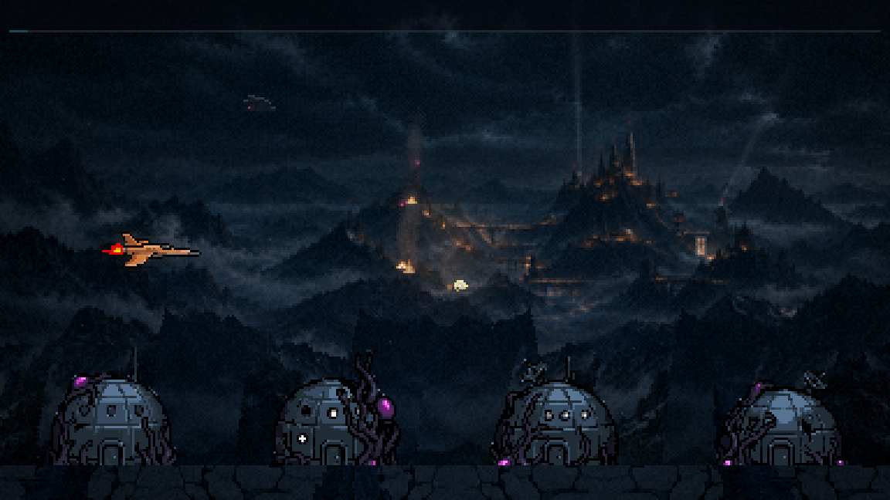
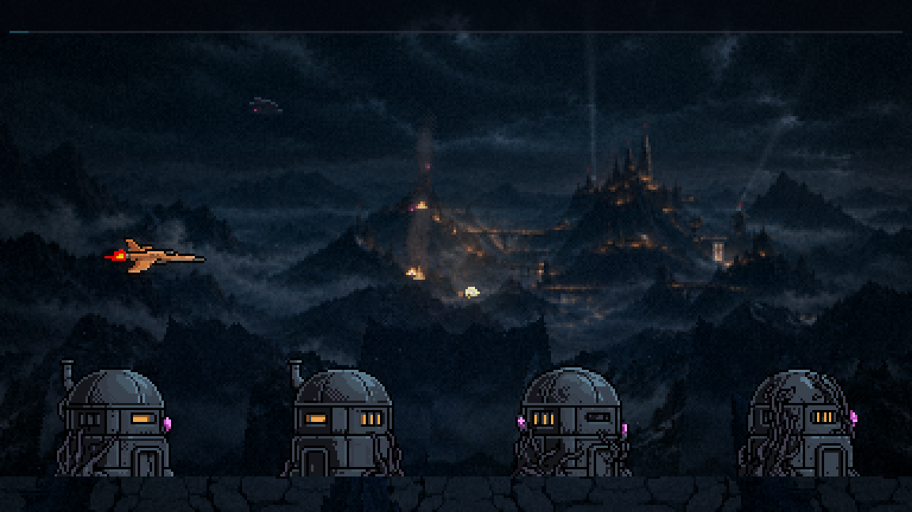
ver todos (32)
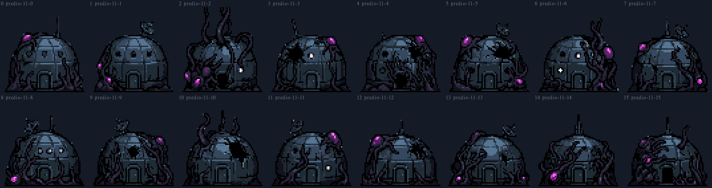
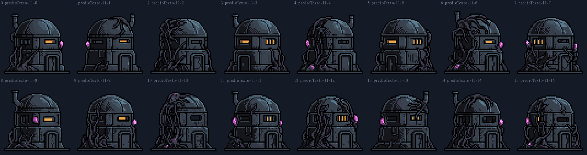
O tanque (hoje: o silo · 63×64 · 6 de vida)
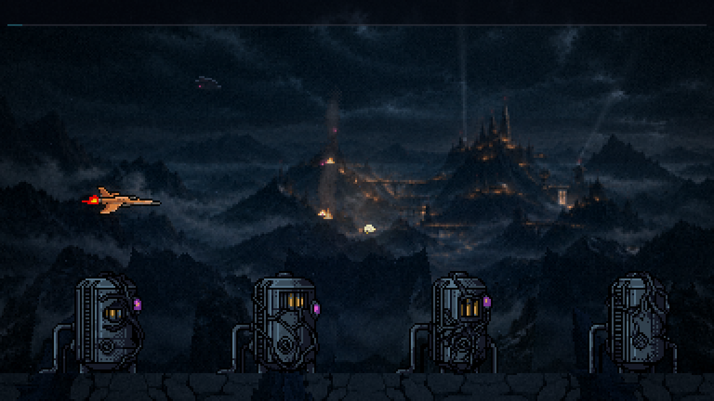
ver todos (16)
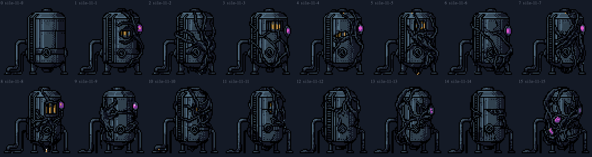
A antena de treliça (hoje: o radar · 64×57 · 4 de vida)
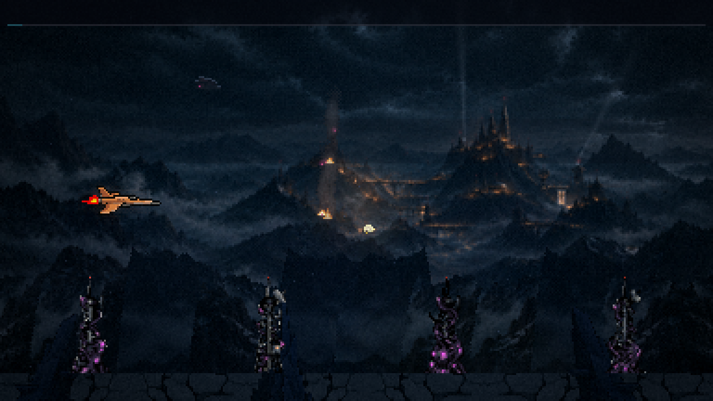
ver todos (16)
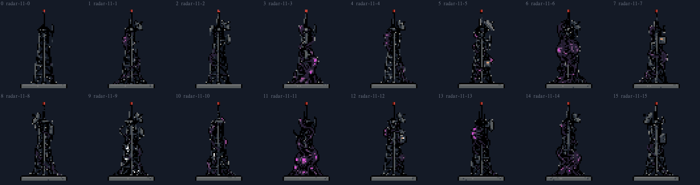
A cúpula grande (hoje: a base · 127×128 · 16 de vida · o coração da colônia aos 41 s)

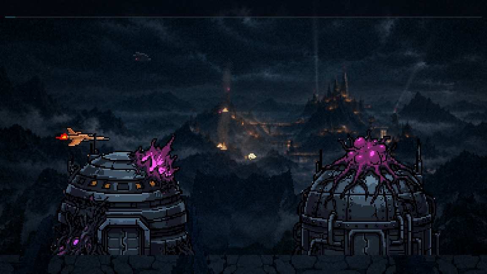
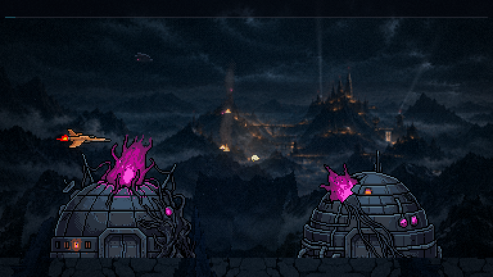
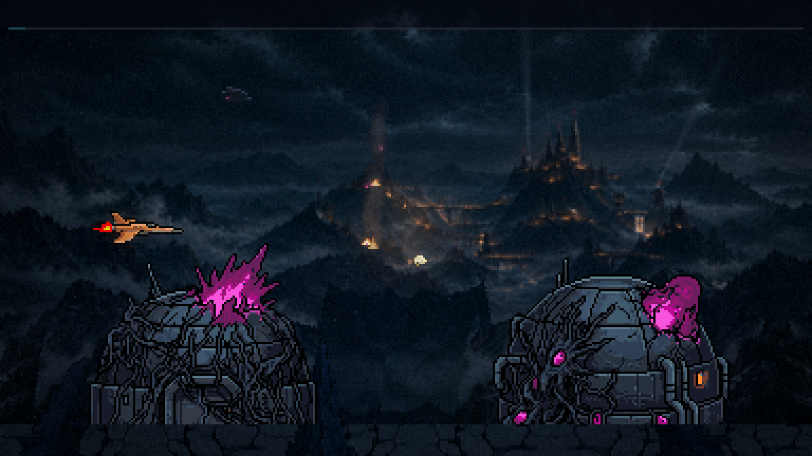
ver todos (8)
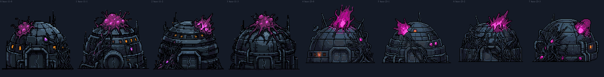
A torre invasora (hoje: a torre que atira · 32×30 · 5 de vida)
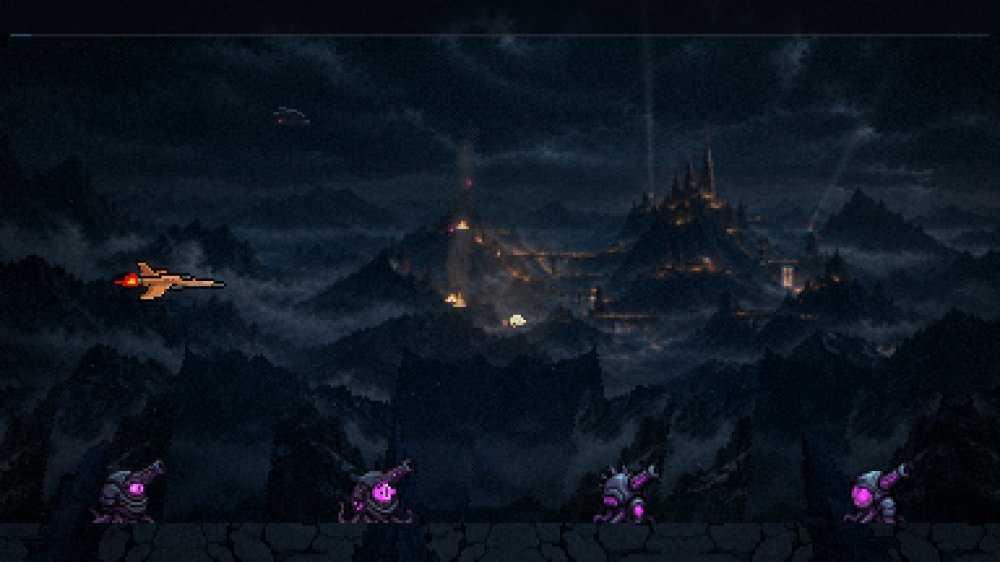
ver todos (50)
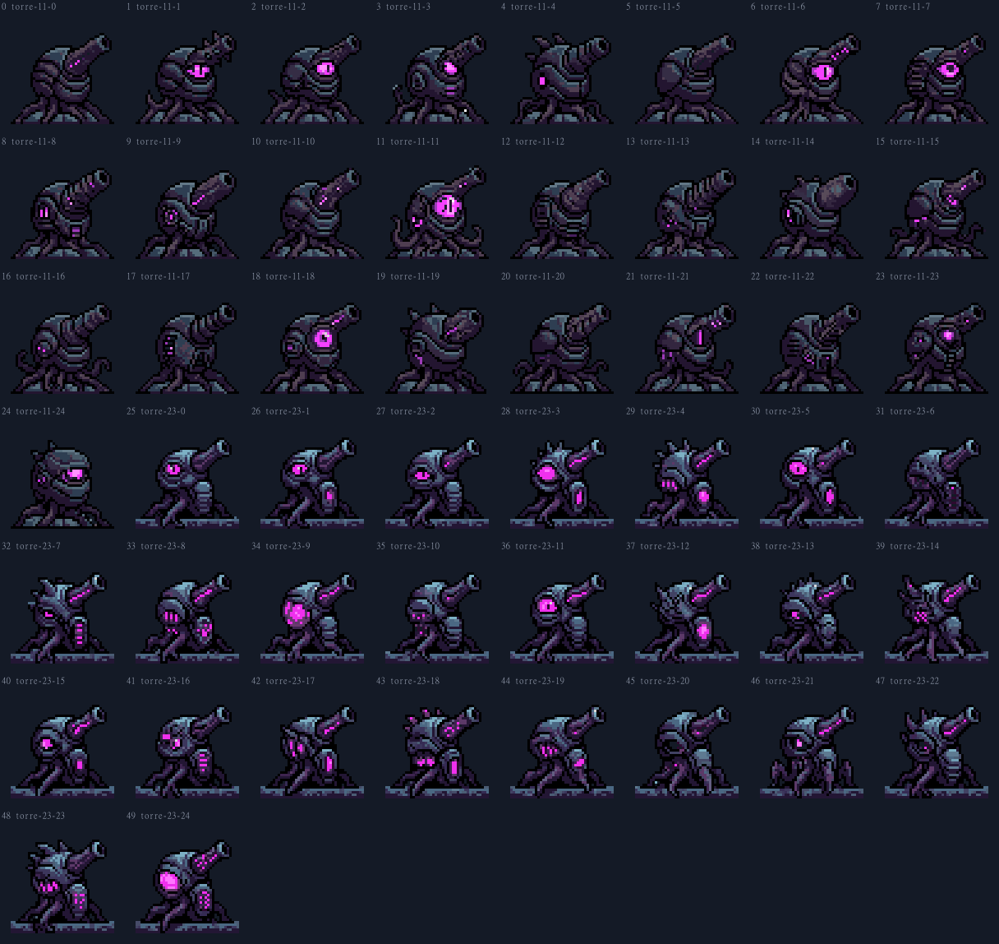
O pilar de rocha (hoje: o pico azul-gelo · indestrutível)
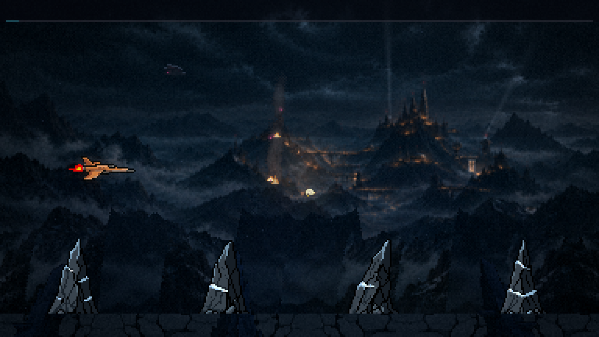
ver todos (16)
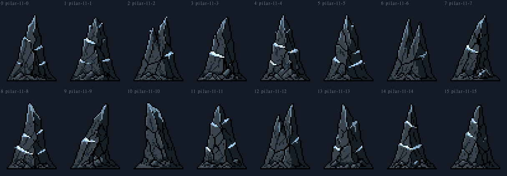
O destroço (hoje: 58×34 · indestrutível)
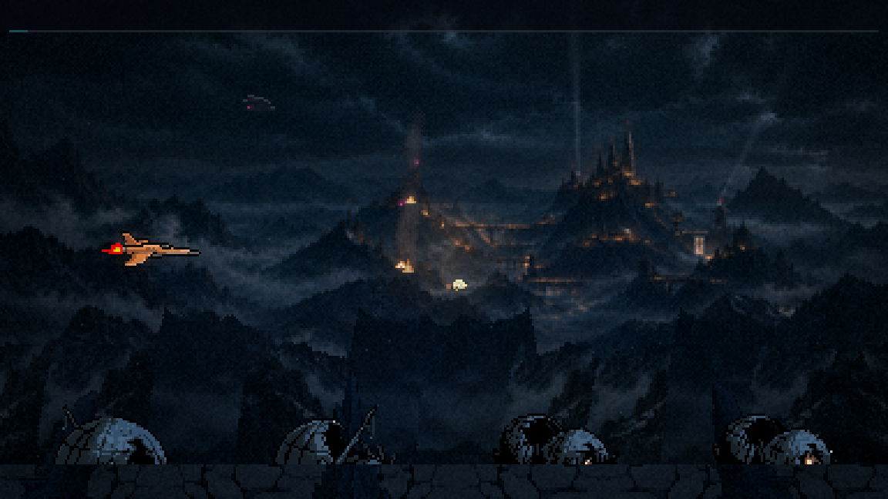
ver todos (16)
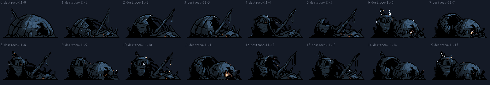
O que você decide
- Por peça, um ou mais números (dois ou três viram variações, como hoje).
- O módulo: a cúpula, o bunker ou os dois.
- Depois da escolha: a instalação (no mesmo quadro de hoje, com a área de colisão igual), as luzes por script (as janelas, o magenta pulsando, a varredura), os pilares nas 4 alturas e o GIF em jogo. O primeiro plano (as silhuetas que passam na frente da nave) sai das peças escolhidas.